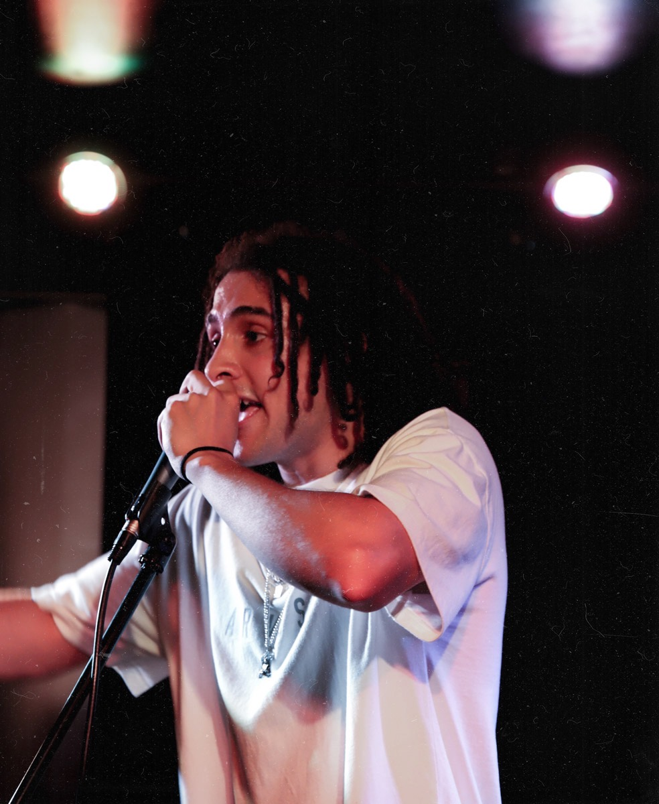

As a kid, we moved around a lot. The house that I currenlty reside in is the 15th to date. I've been to three primary schools, all of which I thrived academically. Come highschool, I became less interested with education (hormones happened), and due to being raised by a single mother, I naturally gravitated towards hip-hop culture and began to fantisise about becoming an NBA player or famous lyracist that could use his riches to pay his mother back for all she had done for him. Given my height never broke 5"10, I pinched a nerve in my hip playing basketball that paralysed me for 8 hours, and I was never athletically inclined in the first place I decided music may be more achieveable route to do achieve that goal, and if I was going to be like my idol "Kendrick Lamar", by 18 I'd be rich, famous, and touring the world. I just had to comit ot writing lyrics every night at 9pm religously. So, at 16, I stayed home from school to release my first single on souncloud: (CRINGE). AT 17, To pursue music further, since my high-school lacked the funding to offer a music program, I decided to enrol in a tafe course labelled "Techncial production", a fancy title forn a cert IV in audio recording. As it was a full-time course, I'd need to drop out of high-school to partake. I was torn, I had just got to year 11, and for the first time in a long time I was taking my education seriously again. But ultimately, the pursiasion of my favourite yotuber speaking about dropping out of college to pursure their dream, backed by my mothers suppport, sourced in spite of the lack of support she had received as a child to chase her dreams as a vocalist, I decided to go all in on music. I had always felt like a black sheep in a way, dropping out of high-school at this age solidified comitting to that feeling, and owning it.
Fast forward to 18, (still not rich and famous). I graduated with a diploma of technical production and released my first E.P. "GLORY" Include image of first ep here
By this time, ABC had released a documentary on local Hiphop artists in Sydney, finally, people that were like me, I felt less like that black sheep, and more confident in growing within an industry geographically closer feel like the black sheep anymore. I would frequeenlty visited Sydney to attend showcases, gigs, and even art showcases from people in this scene, it felt as if there was an entire culture built around it. Come this age, My mother had also decided she was sick of coastal life, being a city girl at heart with two kids that had outgrown their little coastal town, she decided it's time the three of us move to Sydney. This was my time to make a name in the scene, From 18-21 a lot happened, I forged the most important friendships I hold to this day. Meeting Finbar - Met him on a side gig working at "Show Support". He asked if I made music, Although discramanitory of him to asssume based off my hairstyle and skin-tone, he was right. That was the only day he worked that jobs, what are the chances we met. He later on became my sole music producer, not only that but started a band and connected me with some of my best friends to date Platypus Shoes - 3 years, where I learned my social confidence, and gained so much knowlegdge about the nuances of sydney culture, the significance of districts, races, food. I also met two of my closest friends to date, Osman and Jedd First Breakup - At 21 My girlfriend of 5 years and I decided to part ways, it was messy The shave - From the age of 21 - 22 was one of the funnest years of my life, First time single, freedom was up, and music oppurtunities for this band I had joined were rolling in, for a while it felt like almost every weekend we were in a new air bnb for a gig we had been asked to play. We met so many cool people, had so many laughs, and expressed so much creativity. Oh yeah, I also decided to shave the dreads Frontal cortex developed - 22 - 23 Less fun, as my talent grew, so did my doubt, I was getting to th age all my friends had graduated high-school and starting to build wealth, and for some reason, I still wasn't rich and famous. I remember working at the warehouse thinking, I never wanted to waste my time going to uni to comit to.a 9-5 I wouldnt enjoy, yet I always had a job any way, I would've been done by now had I just started at a younger age UX Journey - During my sruglle years driving for amazon making just enough to keep my car running for the next shift, I would explore differnet ways to get rich online, tried dropshipping, made a couple grand, then stumbled upon UX Design. I was sold the idea of creative work, fully remote, good entry level income. I could work from bali and live like a king. So i did an online course, but it wasnt enough to land me a job, so I got my first real clientI still remember the open day, just sus it out, vividly speaking to the
| Age | Company | Role | Location | Rating | Pros | Cons |
|---|---|---|---|---|---|---|
| The General Store | AI Specialist | Surry Hills | ★★★★☆ | Collaboritive | Career progression | |
| Freelance | UX/UI Designer | Remote | ★★★☆☆ | Autonomy | Lead generation | |
| ALDI | Warehousing | Minchinbury | ★★☆☆☆ | Easy | Repetitive | |
| Woolworths | Driver | Strathfield | ☆☆☆☆☆ | Flexible hours | Hard work | |
| JD Sports | Warehousing | Homebush | ★★☆☆☆ | Early finishes | Compensation | |
| Amazon | Driver | Regents Park | ★☆☆☆☆ | Independance | Compensation | Platypus Shoes | Retail | Sydney CBD | ★★★☆☆ | Social | Compensation |
| Show Support | Stage setup | On-call | ★★☆☆☆ | Unstable shifts | Physically taxing | |
| AV/247 | Audio/Visual Technician | Kogarah | ★★☆☆☆ | Compensation | Long hours | |
| Self-employed | Musician | Remote | ★★★☆☆ | Great memories | Oppurtunity | |
| Littles Surf Centre | Retail | Lakehaven | ★★☆☆☆ | It was chill | Casual | |
| Pizza Hut | Dishwasher & Server | Lakehaven | ★☆☆☆☆ | Free brownies | Unhygienic | |
| Tiling assistant | Andre's Tilinig | Gorokan | ★★☆☆☆ | Good chats | Back breaking |